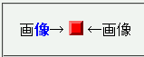
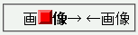

画像→
 ←画像
←画像
<X style="???"> <Y style="???"></Y> <img style="???"> </X>
<X style="???"></X> <Y style="???"></Y> <img style="???">
このいずれかの条件を満たすとき、（前出の例で表すと）img要素がX要素の直前に置かれる。また、X要素に指定したスタイルはすべて無視される。
さらに、X要素開始タグとimg要素開始タグの中間にstyle属性でスタイルを指定した要素（Y要素）があるとき、Y要素に指定したスタイルも無視されることがある。
<p>画<strong style="color:blue;">像</strong>→ <img src="../img/img02.png" alt="■" style="margin:0;"> ←画像</p>
画像→
←画像
strong要素とimg要素にstyle属性でスタイルを設定しています。
N7.1での表示
NN4.8での表示
このバグが発生しているとき、親要素のマージンやパディングの指定が正しく反映されない状態になることがあります。
style属性を使用せず、style要素や外部スタイルシートを使用することでこのバグを回避できます。
NN4.8で不具合の発生を確認しました。